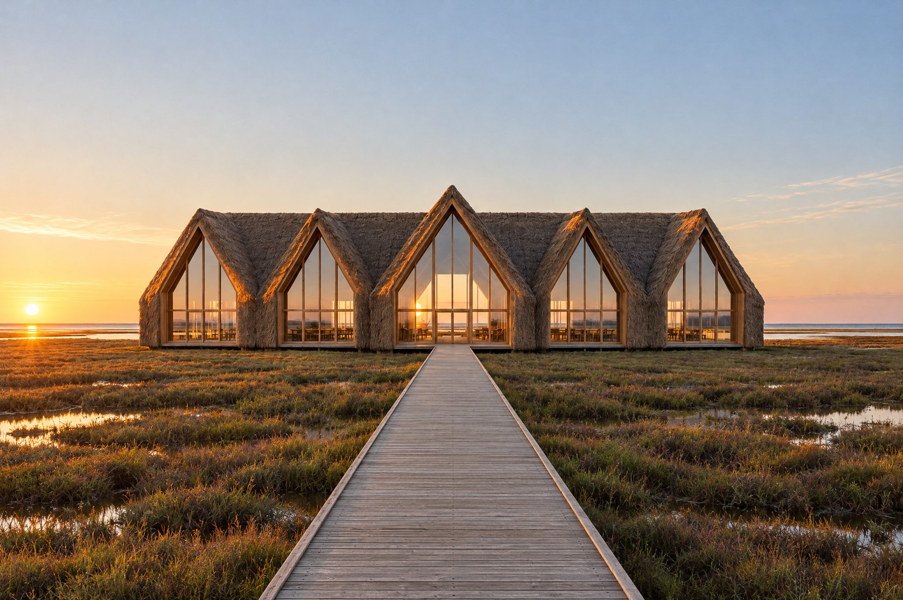

01 Orientation
We start with a compass, not a floor plan.
Before we draw a room we map where the sun rises and sets on the site in every season. The Wetland Centre's glass gables face due east, so the hall fills with the first light of the day.
06:04First sun in the hall, 21 March